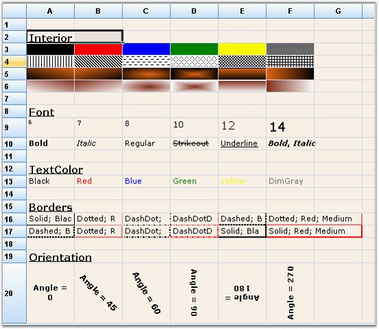
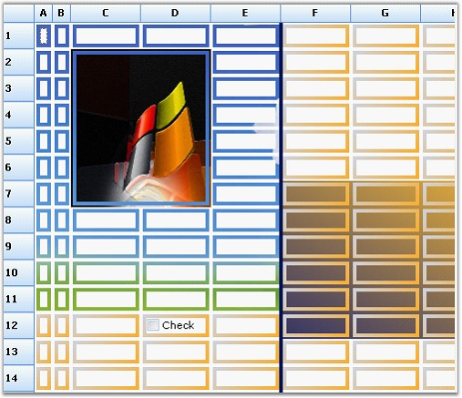
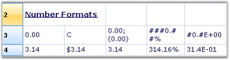
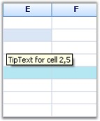
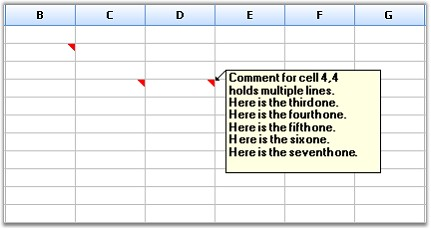

This section provides information on the following topics:
GridStyleInfo class comprises properties that let users to control the appearance and behavior of grid cells.

Figure 100: GridStyleInfo Properties
The above screen shot provides information on the following properties:
1. Interior
Lets you specify a solid, gradient, or pattern style for a cell's background.
The grid cells can be painted by using the Interior property under Syncfusion.Drawing.BrushInfo class. BrushInfo holds information on filling the background of a grid cell. PatternStyle specifies the pattern style to be used and GradientStyle specifies the gradient style to be used.
a. Using C#
|
[C#]
gridControl1[2, 2].Interior = new BrushInfo(GradientStyle.Horizontal, Color.Yellow, Color.Blue); gridControl1[3,2].Interior = new BrushInfo(PattenStyle.DashedHorizontal, Color.Black, Color.White); |
b. Using VB.NET
|
[VB.NET]
gridControl1(2, 2).Interior = New BrushInfo(GradientStyle.Horizontal, color.Yellow, color.Blue) gridControl1(3, 2).Interior = New BrushInfo(PattenStyle.DashedHorizontal, color.Black, color.White) |
2. Font
Lets you specify the font for drawing text. The cells can be given required styles by using the Font property under GridFontInfo. GridFontInfo holds information on the font settings.
a. Using C#
|
[C#]
GridFontInfo boldFont = new GridFontInfo(); boldFont.Bold = true; boldFont.Size = 11; boldFont.Underline = true; gridControl1[3, 4].Font = boldFont; |
b. Using VB.NET
|
[VB.NET]
Dim boldFont As GridFontInfo = New GridFontInfo() boldFont.Bold = True boldFont.Size = 11 boldFont.Underline = True gridControl1(3, 4).Font = boldFont |
3. Text Color
The color for the cell text can be set by using the TextColor property.
a. Using C#
|
[C#]
gridControl1[rowIndex, colIndex].TextColor = Color.Red; |
b. Using VB.NET
|
[VB.NET]
gridControl1(rowIndex, colIndex).TextColor = color.Red |
4. Border
The border can be set to all sides of a cell by setting the Border property to an instance of GridBorder. The GridBorder class holds the formatting information for borders of the cell.
a. Using C#
|
[C#]
gridControl1[rowIndex, colIndex].Borders.All = new GridBorder(GridBorderStyle.DashDotDot, Color.Red); |
b. Using VB.NET
|
[VB.NET]
gridControl1(rowIndex, colIndex).Borders.All = New GridBorder(GridBorderStyle.DashDotDot, color.Red) |
5. Orientation
Lets you specify the orientation of the grid cell text, inturn specifying the angle at which the text is displayed.
a. Using C#
|
[C#]
gridControl1[3, 4].Font.Orientation = 270; |
b. Using VB.NET
|
[VB.NET]
gridControl1[3, 4].Font.Orientation = 270 |
A sample demonstrating this feature is available under the following sample installation path.
C:\Syncfusion\EssentialStudio\[Version Number]\Windows\Grid.Windows\Samples\2.0\Appearance\Cell Style Demo
You can draw custom borders around cells by using the DrawCellFrameAppearance event of the Grid.
The DrawCellFrameAppearance event is triggered for every cell, before the grid draws the frame of a specified cell and after the cell's background is drawn. This event can be used with any cell type such as TextBox, CheckBox, and so on. You can draw texture-brush border and gradient borders.
The following code examples illustrate drawing custom borders by using the DrawCellFrameAppearance event:
1. Using C#
|
[C#]
private void grid_DrawCellFrameAppearance(object sender, GridDrawCellBackgroundEventArgs) { // Draw a custom cell frame/border. int rowIndex = e.Style.CellIdentity.RowIndex; int colIndex = e.Style.CellIdentity.ColIndex; if (rowIndex > 0 && colIndex > 0) { Brush brush; Graphics g = e.Graphics;
// Allocate and cache bitmap and texture brush. if (tb == null) { if (backBmp == null) backBmp = GetImage("back3.jpg"); tb = new TextureBrush(backBmp); }
// Use TextureBrush for top-left cells. if (colIndex < 6 && rowIndex < 12) brush = tb; else
// Otherwise use a gradient brush. brush = new System.Drawing.Drawing2D.LinearGradientBrush(e.TargetBounds, Color.FromArgb( 204, 212, 230 ), Color.FromArgb( 252, 172, 38 ), 45f);
// Draw custom border for the cell. // Space has been reserved for this area with the TableStyle.BorderMargins property. Rectangle rect = e.TargetBounds; rect.Inflate(-2, -2); Rectangle[] rects = new Rectangle[] { new Rectangle(rect.X, rect.Y, rect.Width, 4), new Rectangle(rect.X, rect.Y, 4, rect.Height), new Rectangle(rect.Right-4, rect.Y, 4, rect.Height), new Rectangle(rect.X, rect.Bottom-4, rect.Width, 4), }; g.FillRectangles(brush, rects);
// Disallow grid's default drawing of cell frame for this cell. e.Cancel = true; } } |
2. Using VB.NET
|
[VB.NET]
Private Sub grid_DrawCellFrameAppearance(ByVal sender As Object, ByVal e As GridDrawCellBackgroundEventArgs)
' Draw a custom cell frame/border. Dim rowIndex As Integer = e.Style.CellIdentity.RowIndex Dim colIndex As Integer = e.Style.CellIdentity.ColIndex If rowIndex > 0 AndAlso colIndex > 0 Then Dim brush As Brush Dim g As Graphics = e.Graphics
' Allocate and cache bitmap and texture brush. If tb Is Nothing Then If backBmp Is Nothing Then backBmp = GetImage("back3.jpg") End If tb = New TextureBrush(backBmp) End If
' Use TextureBrush for top-left cells. If colIndex < 6 AndAlso rowIndex < 12 Then brush = tb Else
' Otherwise use a gradient brush. brush = New System.Drawing.Drawing2D.LinearGradientBrush(e.TargetBounds, Color.FromArgb(204, 212, 230), Color.FromArgb(252, 172, 38), 45.0F) End If
' Draw custom border for the cell. ' Space has been reserved for this area with the TableStyle.BorderMargins property. Dim rect As Rectangle = e.TargetBounds rect.Inflate(-2, -2) Dim rects() As Rectangle = New Rectangle() {New Rectangle(rect.X, rect.Y, rect.Width, 4), New Rectangle(rect.X, rect.Y, 4, rect.Height), New Rectangle(rect.Right - 4, rect.Y, 4, rect.Height), New Rectangle(rect.X, rect.Bottom - 4, rect.Width, 4)} g.FillRectangles(brush, rects)
' Disallow grid's default drawing of cell frame for this cell. e.Cancel = True End If End Sub |

Figure 101: Custom Borders
A sample demonstrating this feature is available under the following sample installation path.
C:\Syncfusion\EssentialStudio\[Version Number]\Windows\Grid.Windows\Samples\2.0\Appearance\Custom Border Demo
The formats of a numeric field (cell value) can be masked by using the Format object. You can specify numeric format string as a mask. Format mask objects are assigned to date and numeric fields, and are used to define how the data returned for that field is displayed.
 Note: Format masks object cannot be deleted once
assigned to a field.
Note: Format masks object cannot be deleted once
assigned to a field.
The following code examples illustrate masking numeric fields by using the Format object:
1. Using C#
|
[C#]
this.gridControl1[2, 2].Format = "###0.##%"; |
2. Using VB.NET
|
[VB.NET]
Me.gridControl1(2, 2).Format = "###0.##%" |

Figure 102: Number Formats
CellTipText object lets you specify the ToolTip Text to be displayed when the mouse pointer is moved over a cell. Cell tip text can be set for rows, columns, tables and for individual cells.
The following code examples illustrate how to set cell tips by using the CellTipText object:
1. Using C#
|
[C#]
// Tip Text for cell (2,3). this.gridControl1[2, 3].CellTipText = "TipText for cell 2,3";
// Tip Text for row 3. this.gridControl1.RowStyles[3].CellTipText = "TipText for row 3";
// Tip Text for column 4. this.gridControl1.ColStyles[4].CellTipText = "TipText for column 4";
// Tip Text for table. this.gridControl1.TableStyle.CellTipText = "TipText for table"; |
2. Using VB.NET
|
[VB.NET]
' Tip Text for cell (2,3). Me.gridControl1(2, 3).CellTipText = "TipText for cell 2,3"
' Tip Text for row 3. Me.gridControl1.RowStyles(3).CellTipText = "TipText for row 3"
' Tip Text for column 4. Me.gridControl1.ColStyles(4).CellTipText = "TipText for column 4"
' Tip Text for table. Me.gridControl1.TableStyle.CellTipText = "TipText for table" |

Figure 103: Cell Tips
Excel-like Cell Comment Tips can be included in a Grid by deriving the mouse controller class. The comment text is a custom style property added to cells that hold comments. To change, add or delete a comment, right-click the cell or left-click the red corner.

Figure 104: Cell Comment Tips
A sample demonstrating this feature is available under the following sample installation path.
C:\Syncfusion\EssentialStudio\[Version Number]\Windows\Grid.Windows\Samples\2.0\Appearance\Cell Comment Tip Demo